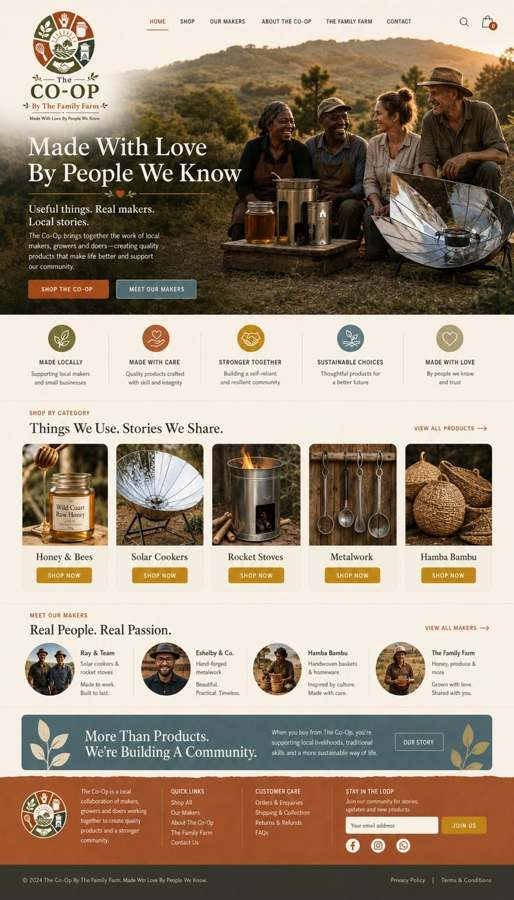

Made With Love
By People We Know
A curated marketplace, not an endless catalogue.
The Co-Op grew from a simple idea: there are good things being grown, built and made by people around us. We want to help those things find a market without hiding the people behind them.

It starts close to home.
The Family Farm produces its own goods, but the Co-Op is broader. It gives us a place for our products to sit beside Ray’s practical cooking equipment, Eshelby & Co.’s metalwork, Hamba Bambu and other products made by friends and neighbours.
We are starting small on purpose. Every product should have a clear maker, a useful reason to exist and a story we can stand behind.
WHAT THE CO-OP SHOULD FEEL LIKE
- Curated, not crowded
- Useful rather than decorative for the sake of it
- Maker-first and personal
- Warm, practical and trustworthy
- Rooted in The Family Farm, without pretending everything is ours
MAKERS CREATE
People make, grow or build something worthwhile.
WE CURATE
The Co-Op selects products we know and are comfortable putting our name beside.
YOU DISCOVER
Customers see both the product and the person behind it.
COMMUNITIES GROW
More value stays with the people doing the work.